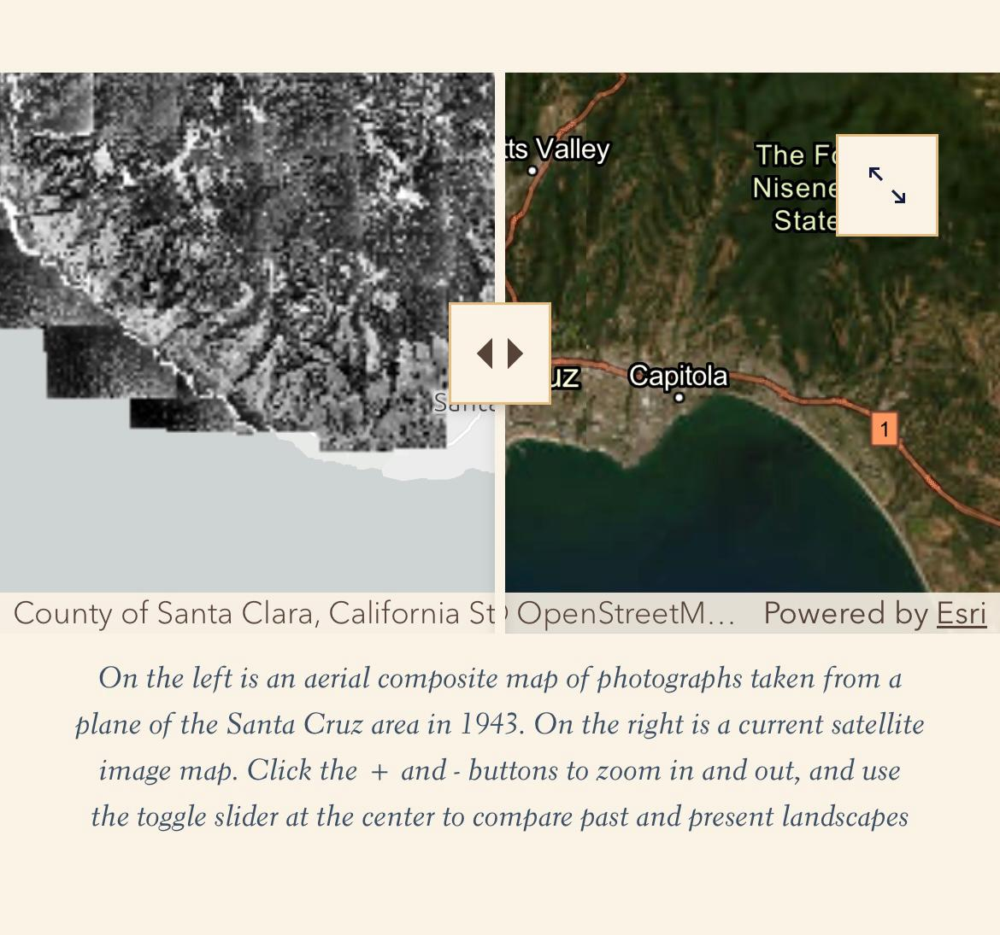

GeoFly Lab Members Contribute to 'Histories of Fire and Industry in the Santa Cruz Mountains'
2 minutes read
GeoFly Lab members Griffin Svec-Burdick and Nathan Leroy contributed georeferenced aerial photographs to the project "Histories of Fire and Industry in the Santa Cruz Mountains," collaborating with Professor Andrew Mathews.
Story Map link: Histories of Fire and Industry in the Santa Cruz Mountains
The story of the Santa Cruz mountains is a story of people, plants, and fire. Fire has always been part of the landscapes of what is now Santa Cruz, as is evidenced in the creation story of the Amah Mutsun Tribal band and other Ohlone people. As you can see in this video narrated by former Amah Mutsun Chairman Valentin Lopez, this story centers on the hummingbird, or Umunhum in the Mutsun language, who carries fire in his bright red throat.



Today, amidst ongoing legacies of indigenous lifeways disrupted by colonialism, climate change is activating histories of settler logging, ranching, and housing developments and making Central Californian coastal landscapes more flammable.
You can explore the full narrative and visual history in the Story Map here: Histories of Fire and Industry in the Santa Cruz Mountains